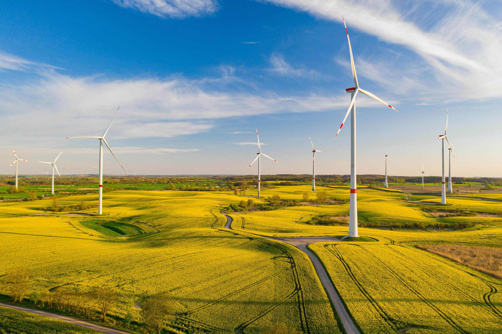

Rola Wiatru w Nowoczesnym Miksie Energetycznym
Energetyka wiatrowa stanowi jeden z filarów transformacji energetycznej na świecie i w Polsce. Wiatr, jako odnawialne źródło energii (OZE), jest kluczowym elementem w dekarbonizacji sektora energetycznego i dążeniu do neutralności klimatycznej. Jego rola w miksie energetycznym dynamicznie rośnie, oferując czystą energię na dużą skalę i zmniejszając zależność od paliw kopalnych.
Nowoczesne farmy wiatrowe, zarówno lądowe (onshore), jak i morskie (offshore), są w stanie generować setki megawatów mocy, zaspokajając zapotrzebowanie na energię dla tysięcy gospodarstw domowych. Polska, dzięki swojemu położeniu geograficznemu, posiada doskonałe warunki do rozwoju energetyki wiatrowej, zwłaszcza na Bałtyku.
Jak Działa Turbina Wiatrowa?
Sercem każdej farmy wiatrowej jest turbina, która przekształca energię kinetyczną wiatru w energię elektryczną. Proces ten jest złożony i opiera się na precyzyjnej współpracy kilku kluczowych komponentów.
Elementy Główne Turbiny:
- Wirnik (Rotor) z Łopatami: Zazwyczaj składa się z trzech łopat osadzonych na piaście. Ich aerodynamiczny profil sprawia, że pod wpływem wiatru generowana jest siła nośna, która wprawia wirnik w ruch obrotowy. Długość łopat w nowoczesnych turbinach może przekraczać 100 metrów.
- Gondola: Obudowa umieszczona na szczycie wieży, w której znajdują się kluczowe mechanizmy:
- Przekładnia (Skrzynia Biegów): Zwiększa prędkość obrotową z wirnika (zwykle 15-20 obr./min) do prędkości wymaganej przez generator (ok. 1500 obr./min).
- Generator: Urządzenie, które konwertuje energię mechaniczną z wirnika na energię elektryczną na zasadzie indukcji elektromagnetycznej.
- Układ sterowania: Komputerowy system, który automatycznie ustawia gondolę w kierunku wiatru (mechanizm odchylenia) i reguluje kąt natarcia łopat (mechanizm pochylenia), aby maksymalizować wydajność i chronić turbinę przed uszkodzeniem przy zbyt silnym wietrze.
- Wieża: Wspiera gondolę i wirnik na odpowiedniej wysokości, gdzie wiatr jest silniejszy i bardziej stabilny.
- Transformator: Podnosi napięcie energii elektrycznej wyprodukowanej przez generator, aby zminimalizować straty podczas przesyłu do sieci energetycznej.
Onshore vs. Offshore: Ląd kontra Morze
Farmy wiatrowe buduje się w dwóch głównych środowiskach, co determinuje ich technologię, koszty i wydajność.
Farmy Lądowe (Onshore)
Zalety: Niższe koszty budowy i utrzymania, łatwiejszy dostęp serwisowy, rozwinięta technologia.
Wady: Ograniczenia związane z dostępnością terenu, potencjalne konflikty społeczne (hałas, krajobraz), mniejsza i mniej stabilna siła wiatru w porównaniu do lokalizacji morskich.
Farmy Morskie (Offshore)
Zalety: Znacznie wyższa wydajność dzięki silniejszym i bardziej stałym wiatrom, możliwość budowy większych turbin o większej mocy, mniejszy wpływ na krajobraz lądowy.
Wady: Wysokie koszty inwestycyjne i operacyjne, skomplikowany proces instalacji w trudnych warunkach morskich, konieczność stosowania zaawansowanych fundamentów (monopale, jackety) i podmorskich kabli przesyłowych.
Ekologia i Mity Energetyki Wiatrowej
Jak każda technologia, energetyka wiatrowa ma swój wpływ na środowisko, jednak wiele obaw jest opartych na mitach lub przestarzałych danych.
Wpływ na Ptaki i Nietoperze
Fakt: Kolizje ptaków z łopatami turbin zdarzają się, jednak badania pokazują, że ich skala jest znacznie mniejsza niż w przypadku innych obiektów stworzonych przez człowieka, takich jak budynki, linie energetyczne czy pojazdy. Nowoczesne farmy wiatrowe podlegają rygorystycznym ocenom oddziaływania na środowisko, a ich lokalizacja jest starannie planowana, aby omijać korytarze migracyjne ptaków. Stosuje się również systemy monitoringu i odstraszania.
Emisja Dźwięku (Hałas)
Fakt: Turbiny wiatrowe generują dźwięk, ale jego poziom jest regulowany prawnie. W odległości kilkuset metrów od turbiny hałas jest porównywalny do cichej rozmowy lub szumu liści. Nowoczesne projekty łopat i technologie sterowania minimalizują emisję dźwięku. Uciążliwe infradźwięki, często przywoływane przez przeciwników, mają natężenie poniżej progu percepcji człowieka i nie wykazano ich negatywnego wpływu na zdrowie.
Recykling Łopat Turbin
Wyzwanie i Rozwiązania: Łopaty wykonane są z kompozytów (głównie włókna szklanego i żywic epoksydowych), co utrudnia ich recykling. Jest to jedno z największych wyzwań branży. Jednak intensywnie rozwijane są nowe metody:
- Recykling chemiczny (solwoliza, piroliza): Pozwala odzyskać surowce chemiczne i włókna.
- Wykorzystanie w budownictwie: Kruszywo z łopat jako dodatek do cementu lub betonu.
- Projektowanie dla recyklingu: Nowe materiały, takie jak żywice termoplastyczne, które można łatwiej przetwarzać.
Warto podkreślić, że ponad 85% masy całej turbiny (stal, miedź, beton) podlega pełnemu recyklingowi.